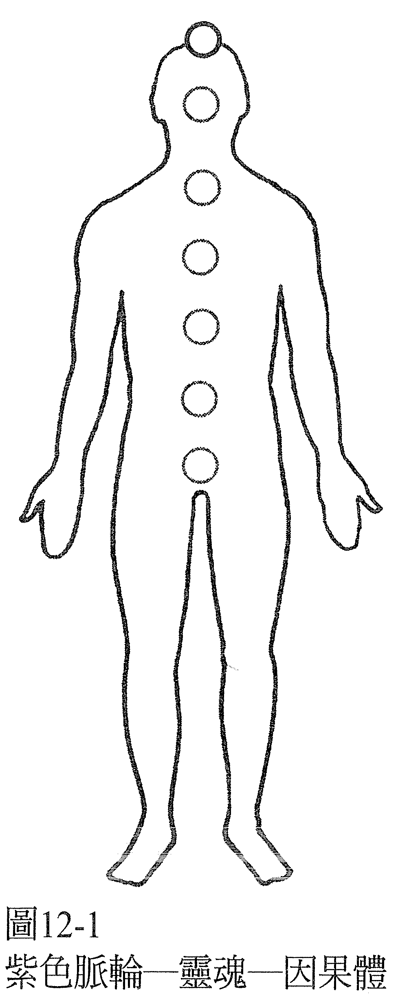
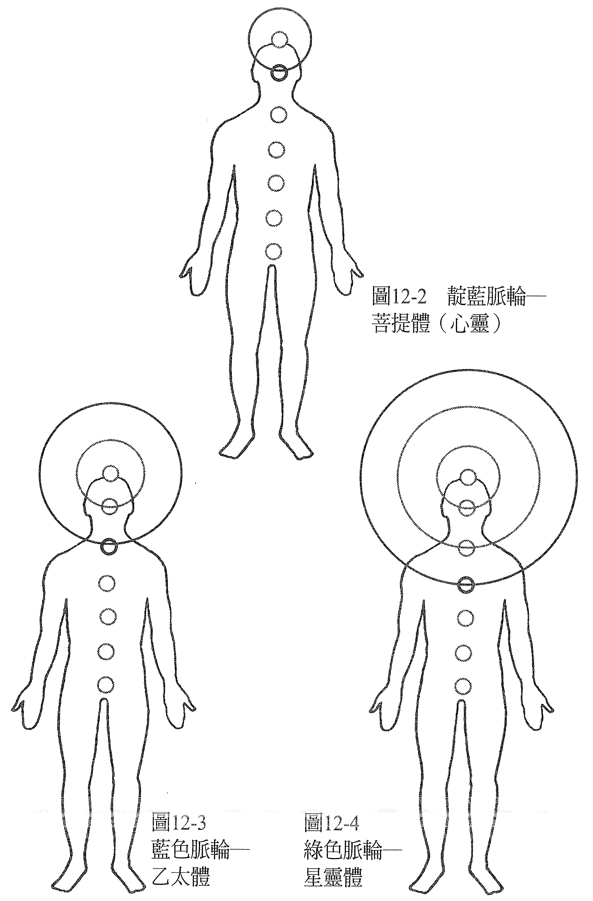
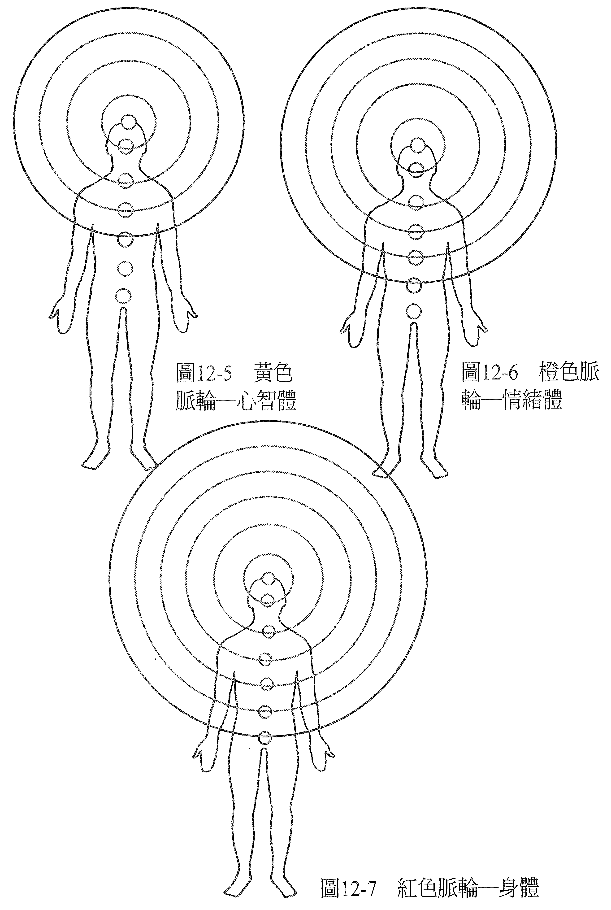
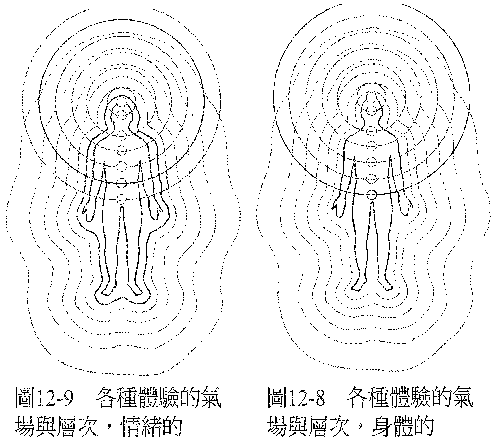
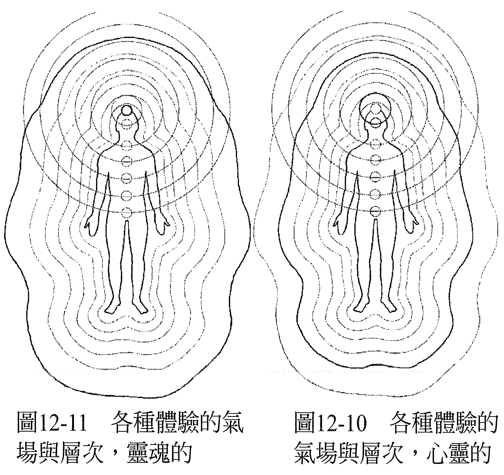

第 12 章 不同层次的体验
每个脉轮不仅都代表你意识的一部分，也和构成「你」的其中一个能量体有关。它还表示特定的意识层面，一个让你用不同角度看事情的体验层次，以及与你存有的中心有关的生命境界。
因此，若你同意你是驻于身体里的一份意识，那你内心对自己最深的体验，必定是所谓的纯粹意识在紫色脉轮的中心焕发着智性之光。
它是你意识的最深处，与因果体、即意识的因果层面有关，因为若一切都始于自身的意识，而意识的最深处代表了你最深的渴望和目标，那它必然是一切之所以发生的根源。它也显示了上帝的住所，上帝存在于你之内，祂以你的样貌存在，并透过你的双眼来看世界（见图 12-1）。

在一世的时间里，灵魂会成为个体化的意识，即我们所谓的心灵。它宛如灵魂在那一世穿着的外衣，所以是从中心往外的第二层体验。
心灵与靛蓝脉轮以及所谓的菩提体、意识的菩提面有关（见图 12-2）。也有人说它代表：佛陀或其他成就了同层次的觉悟者所拥有的那种感知层次。当然，我们知道它也表示各种层面上心灵对心灵的沟通，我们也是从这里在观照从内心显化于外的一切。

以此推论，从中心往外的下一个层次，必然与蓝色脉轮有关，也和乙太的元素有关，物质实相就投射在这个乙太的基质上，它是物质宇宙与灵性宇宙的交会处。它就叫做乙太体，意识的乙太层面（见图 12-3）。在物质世界里，它是化现成物质的层面，思想形式就存在于此。
接下来再往外的层次是星灵体还有星灵的层面（见图 12-4），与绿色脉轮有关。有人说通往这个层面的关键是「无害」（harmlessness），这是一个与世间万物连结的面向，由绿色脉轮（即所谓的心轮）代表。
从中心再往外是心智体，与它相关的是黄色脉轮、心智、存有中与心智有关的层面（见图 12-5），我们称之为人格模式。这个层面是西方社会所认为的正常生命状态，是「正常」认知的发源地。不过我比较喜欢称它们为常见的、平常的，但不叫「正常」的，不然听起来好像大多数的传统社会仍然认为我们觉得正常的思考方式是异常的。接下来，再往外的下一层体验是情绪体以及情绪的层面，与橙色脉轮有关（见图 12-6）。最后是物质身体以及物质的层面，与红色脉轮有关，它代表最外层的体验（见图 12-7）。

当你关注的是物质的身体，可以说你投注在红色脉轮的层面上，你存有里最厚重的振动频率。从存有的这个层面散发的能量，相较之下是最小的。当你敞开自己，进入内在存有第二深的层次，会来到情绪体，它和橙色脉轮有关，你会经历到较为细致的振动频率，没那么厚重，因此将能散发比较多的能量。当你比较敞开时，就会经验到它。
当你愈朝这个方向发展，你会发现你愈敞开、愈深入存有的更深层，也就是「较高」的脉轮以及更精细的振动频率、较不厚重的能量体，能够流通的能量就变得愈多，最后你会来到因果体。然后，你就是一团纯粹的意识，散发着无限的能量。
你的每一个能量体都在其他的能量体之内，互相穿透，每一个看起来都像你，各以不同的振动频率和其他的能量体共存。
我们讲到出窍的经历时，这类经历指的是脱出身体之外，我们可以按照它牵涉到哪些能量体来分类。因此，若案主的人坐在一个房间里，但同时描述着另一个他们正在去的地方，而他们的身体还在运作，那可以按照经验到的情况，判断出是哪个能量体（心智体、星灵体或乙太体）去了那个地方。
另一种经历是意识出现在其他的地方，但身体没有在运作，这种情况叫做心灵之旅；当我们离开身体不再回来，可以说离开的是因果体、灵魂。
在昏厥、癫痫发作时出窍，是松脱了和身体有关的红色脉轮。在这样的情况下，可以重新建立红色脉轮里的红色，把根传入大地，从大地汲取养分到双腿、再到红色脉轮，借此将这个人重新带回身体里。
当你的意识驻于某个脉轮，表示你活在和那个脉轮有关的能量体里，透过那个脉轮来看世界，也就是从与它相关的层次来看世界。
去经历不同的层次，就像待在不同的国家一样，事情会按照不同的原则，以不同的方式发生。因果关系就不一样了（见图 12-8 ~ 12-11）。


在黄色脉轮与它之下的层次上，我们会很在意自己以及自己的需求，物质上的因果实相，还有情感上的需要以及快乐原则（pleasure principle），意即会去寻找让自己感觉最好的。在这个层面上，事物以特定的方法发生：当你感到匮乏，你想拥有、或是没有某样东西，你是有方法可以得到它的，但你必须做点什么。你必须付出努力，或是观想、使用肯定语（affirmation），总之你必须做点什么才能得到。如果你不做，就不会得到。
有一说，星灵层面的其中一个部分是无害，当你从这个角度去看，你会明显看到每个人都在用自己的方式表达爱；有的时候在化解错误认知之前，会因为觉得没有爱而产生反弹。爱显然是让我们相聚的结合力，是把宇宙万物连结在一起的宇宙黏剂。从这个层面上，我们可以看到如何在不伤害他人的情况下，满足自己个人的目标。事实上，我们已经看见了满足别人的需求，正是让自己的需求也得到满足的关键。
在蓝色脉轮的层面上，事物和在黄色脉轮上相比，运作的方式又不一样了。你从不感觉匮乏，因为你感受到的是一个丰盛的宇宙。你想着一样东西，你不费吹灰之力就可以得到。如果你努力，就是把自己放在黄色脉轮，那么原本要透过蓝色脉轮显化的事物就不会继续存在于那里了。蓝色脉轮代表的是丰盛的状态，最不抗拒的道路、不费劲地顺势而流、感谢你所得到的，都是通往此一状态的关键。在这个层面上，你要得到，就必须无为。
在蓝色脉轮里，我们经验到完美，一切都发生得相当完美，我们在对的时间来到对的地方，和对的人在一起，或是在对的时机里单独一人，做着在那一刻觉得对的事。我们很自然会说：「我爱我所在的地方。我爱与我在一起的人。我爱我在做的事。」
到了靛蓝脉轮，生命开始像个美梦，完美的感觉更强烈了。我们会觉得自己就像圣灵，过去当我们与祂连结时，都不认为祂就是我们，可是祂想让我们得到一切我们真心想要的东西；我们会觉得在实现自己的愿望时，也同时在实现圣灵的愿望。耶稣就是在这个层面上，祂会说：「天父与我为一。」
我们也会直接意识到灵体之间的对话，无论这些灵体是否拥有物质形体，还是代表其他的东西，例如大自然的精灵，国家之类的团体意识精神，或是「无生命」的物品，例如手机、建筑物、机器。
我们会明了共同造物的互动变化，灵体与灵体之间的交互作用，因此也会知道意识在物质世界里显化了什么。我们会直接看到那意识里的、还有意识外的物质世界两者之间的关系，而且不只看到自己的，也会看到其他造物者的。
在因果界的层面上，我们知道：全是意识在创造它所感知的一切，就像为了自己的兴趣而播放的电影一样，我们看到所有发生的事情都只是自身意识的结果。我们会看到所有存在的一切、我们所是的一切，都只是那纯粹意识的一部分。
合一不只是个概念，更是直接的体验。显然一切都是内在的，而且因为我们有自由，可以选择采用任何意识状态，毫不受限，所以我们有能力采用其他存有、物品、甚至是上帝的意识，仿佛那就是我们自己的一样，于我们的内在去经验它。你会直接体验到「我们就是我在」（We are I am）这几个字的含意。
我们会经验到自己是纯粹的意识，创造一场梦，并经历到所有的创造都是这场梦的显化。我们会觉察到在这场梦里做梦，宛若在一场清澈发光的梦里做梦一样，然后我们决定这场梦里要发生什么事，没有任何限制。
我们梦到骨头可以修复，肿瘤消失，瘸子恢复行走，盲者重见光明。梦，没有规则。想梦什么，就梦什么。我们可以梦到自己的能力无远弗届，可以疗愈所有现身想被疗愈的一切，我们知道在我们做的这场梦里，在自身意识所创造出的这个场景中，在自己这场梦里用自身的认知所创造出的实相中，没有治不好的病。
——在这个世界上，一切都可以疗愈！——